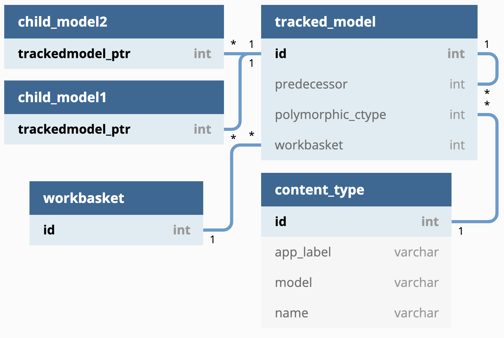

6. Use Django Polymorphic for Multi-Table Inheritance¶
Date: 2020-06-12
Status¶
Proposed
Context¶
The Tariff Management Tool (TAMATO) requires a way to track changes across the system. This is for multiple reasons, one is for auditing purposes, another is to show progressive diffs of the data set, on occasion it is also desirable to see data from a historical standpoint and what changed with it.
To handle this there needs to be a way of connecting all changes to the
data within the system made since a certain point in time. As all
changes are managed through WorkBaskets the logical conclusion is
to use WorkBaskets as a basis for finding points of change and
group individual changes on those. Following this logic there must be a
clean method to follow reverse relations from a WorkBasket.
This is also a problem found within the WorkBasket system itself
which must manage changes and apply them. So naturally these problems
will be solved together.
In essence:
It is required to find a set of changes based on a point of time.
WorkBaskets group changes together based on a single point of time.Finding a
WorkBasketat a specific point in time is relatively simple.Finding all the objects grouped together by the
WorkBasketholds some complexity - this is the problem that this ADR proposes to solve.
Decision¶
This ADR proposes to use multi-table inheritance where a polymorphic
parent model holds a Foreign Key to a Workbasket. All changeable
data models inherit this polymorphic parent model. This will, as a
result, mask the intermediate (parent) tables on reverse relations to
data models being changed thus simplifying both the queries and code
required to access the data being changed from the WorkBasket.
What does this actually mean?¶
Multi-table inheritance (MTI)¶
MTI is useful when multiple models have overlapping columns. Instead of copying these columns across all the tables, one common table is created that has these specific columns. The more specific tables then have a key to this common table. In Object oriented terms the common table is a concrete class which the more specific models inherit as a parent.
Django supports this and, if coming from the child model, obfuscates the link to a separate table by allowing you to access the parent attributes straight from the child object (the parent and child rows are joined in a single query so performance is not affected).
Polymorphic models¶
MTI solves one half of the problem - giving all the child tables an efficient way to link to their inherited columns, however this could also be solved with a mixin. The second half of the problem is not easily solvable with a mixin - this is having efficient reverse relations from the parent model to the child models. i.e. finding all the child objects when we only have the parent objects. This is where polymorphism comes in.
Polymorphism of a database object is described as the ability for that object to take on multiple forms. In this case it is better described as the parent object having a self-awareness of which child object it represents. To achieve this in django the parent table has an additional column holding the content type (essentially the table) of the child object. In doing this it is possible to group all parent rows by their child object type. Once grouped a single query can be made for each child object type to add the child columns to the objects.
The result of this is that, when starting with a list of the parent
objects, the total number of queries to collect all the data is N+1,
where N represents the number of types of children in the query
and 1 is the initial query to get all the parent objects.
Alternatives¶
One alternative is to use a mixin instead of MTI and polymorphism. This
gives the child objects all the necessary columns without a join being
required, however it removes the convenience of having a single table
other objects can link to. Specifically in TAMATO, it makes it difficult
to go from a WorkBasket to all the possible connected models. It is
necessary to either have a list of all the connected children types in
the WorkBasket model - which represents more work and weaker support
across databases - or to have a query against every possible linking
table to check if there is a link - which is inefficient.
Another alternative is single-table inheritance. This is where we have a single table which can hold multiple models - in this case the separation of the models from the table data is done in code. This allows for everything to be done in a single query and it is easy to work through reverse relations. However validation becomes increasingly complex and, due to most columns having to be nullable, indexing takes a significant hit.
Data Model¶

Column Descriptions¶
TrackedModel¶
N.B. “related record” is used to describe the child model inheriting the
TrackedModel.
ID- Primary Keyworkbasket- the relatedWorkBasket.predecessor- A foreign key to anotherTrackedModelwhich represents the previous iteration of the related record.polymorphic_ctype- A foreign key to Djangos content type system, which stores the details of the table being linked to.
ChildModel¶
TrackedModel- Both the primary key of the table, and a foreign key to theTrackedModeltable - as a result the ChildModel and relevantTrackedModelshare the same primary key.
Consequences¶
SQL¶
As discussed there are some performance costs and benefits to weigh up.
Cons:
The number of queries in reverse relations will always be
N+1.The use of an
INstatement has some performance costs, although these are generally negligible.Some code is required between the initial query fetching
TrackedModels to generate appropriate queries for the related tables.
Pros:
Most of the above performance hits are incredibly difficult to avoid, in relation to other solutions this is rather efficient.
The only obviously more efficient solution (single-table inheritance, requires 1 query only) lacks significant options for constraining data.
Nshould never be very large given the limited number of models to be changed.Likewise the number of objects included in an
INclause is unlikely to ever be very high.The code for this option is surprisingly clean.
To further exemplify how this works some example queries are below.
Query examples¶
Getting all of one child model¶
This query gets all Commodity models as an example:
SELECT trackedmodel.id,
trackedmodel.polymorphic_ctype_id,
trackedmodel.workbasket_id,
...
commodity.trackedmodel_ptr_id,
...
FROM commodity
INNER JOIN trackedmodel
ON commodity.trackedmodel_ptr_id = trackedmodel.id;
Getting all objects changed in a WorkBasket¶
This set of queries gets all the models changed in a single
WorkBasket. In this case a footnote type and 2 commodities were
changed.
This first query gets all the TrackedModels:
SELECT id,
polymorphic_ctype_id,
workbasket_id,
...
FROM trackedmodel
WHERE workbasket_id = 1;
The next two queries are generated in code and then executed.
This one gets all the commodities:
SELECT trackedmodel.id,
trackedmodel.polymorphic_ctype_id,
trackedmodel.workbasket_id,
...
commodity.trackedmodel_ptr_id,
...
FROM commodity
INNER JOIN trackedmodel
ON commodity.trackedmodel_ptr_id = trackedmodel.id
WHERE commodity.trackedmodel_ptr_id IN ( 1, 3 );
This one gets all the footnote types:
SELECT trackedmodel.id,
trackedmodel.polymorphic_ctype_id,
trackedmodel.workbasket_id,
...
footnotetype.trackedmodel_ptr_id,
...
FROM footnotetype
INNER JOIN trackedmodel
ON footnotetype.trackedmodel_ptr_id = trackedmodel.id
WHERE footnotetype.trackedmodel_ptr_id IN ( 2 );
Getting all of one type of child model from a WorkBasket¶
This could be done directly in SQL as one query, however the Django ORM does it by default in 2 (and sometimes by more depending on the code implementation). The 2 query method uses the following queries:
This first query gets all the tracked models which are commodities.
SELECT trackedmodel.id,
...
FROM trackedmodel
INNER JOIN content_type
ON trackedmodel.polymorphic_ctype_id = content_type.id
WHERE trackedmodel.workbasket_id = 1
AND content_type.app_label = "commodities"
AND content_type.model = "commodity";
This second query gets all the commodity details from the
TrackedModel details.
SELECT trackedmodel.id,
...
commodity.trackedmodel_ptr_id,
...
FROM commodity
INNER JOIN trackedmodel
ON commodity.trackedmodel_ptr_id = trackedmodel.id
WHERE commodity.trackedmodel_ptr_id IN (1, 3);
Code¶
There are numerous benefits of this option in the context of code.
Foremost is that this solution only requires the use of a single extra library which makes use of an MTI mechanism already natively to Django. This library is django-polymorphic.
The models classes as a result are quite simple, looking like so:
class TrackedModel(PolymorphicModel):
workbasket = models.ForeignKey("workbaskets.WorkBasket", on_delete=models.PROTECT)
draft = models.BooleanField(default=True)
live = models.BooleanField(default=False)
predecessor = models.OneToOneField(
"self",
on_delete=models.PROTECT,
null=True,
blank=True,
related_name="successor",
)
class FootnoteType(TrackedModel, ValidityMixin):
footnote_type_id = models.CharField(
unique=True, max_length=3, validators=[validators.valid_footnote_type_id]
)
description = models.CharField(max_length=500)
Accessing a child object is also no different than accessing a normal
django object. On the other hand accessing a TrackedModel directly
automatically returns you the child instance it represents. As a result
getting all TrackedModels connected to a WorkBasket
automatically returns the relevant actual models:
w = WorkBasket.objects.first()
w.tracked_models.all()
# Prints:
# <PolymorphicQuerySet [
# <Commodity: Commodity object (1)>,
# <FootnoteType: FootnoteType object (2)>,
# <Commodity: Commodity object (3)>
# ]>
This is due to Django-Polymorphic overriding the default queryset class
to fetch the child classes and return those instead. Because of this the
code is always dealing with the child model and not directly with the
TrackedModel unless explicitly stated. The project therefore is
allowed to lean into the template method design pattern. Most of the
generic requirements of TrackedModels can be handled in the
TrackedModel itself. The children will inherit this common code and
can override it with any specific requirements the child model has. An
example would be generating TARIC3 components which could look like:
w = WorkBasket.objects.first()
taric_components = [
tracked_object.generate_taric()
for tracked_object in w.tracked_models.all()
]
The same can be said for any operation that needs to be applied across
all objects tracked in a WorkBasket. As the code deals with the
child models by default it will, by default, run the code relevant to
that child.
This approach does force the N+1 queries to be made by default. But
cases where the TrackedModel needs to be interacted with directly
will be rare.
In summary this keeps the number of queries to a relative minimum with each query itself being performant. It simplifies the code base and makes it easier for the developers to rapidly create generic solutions across the system.